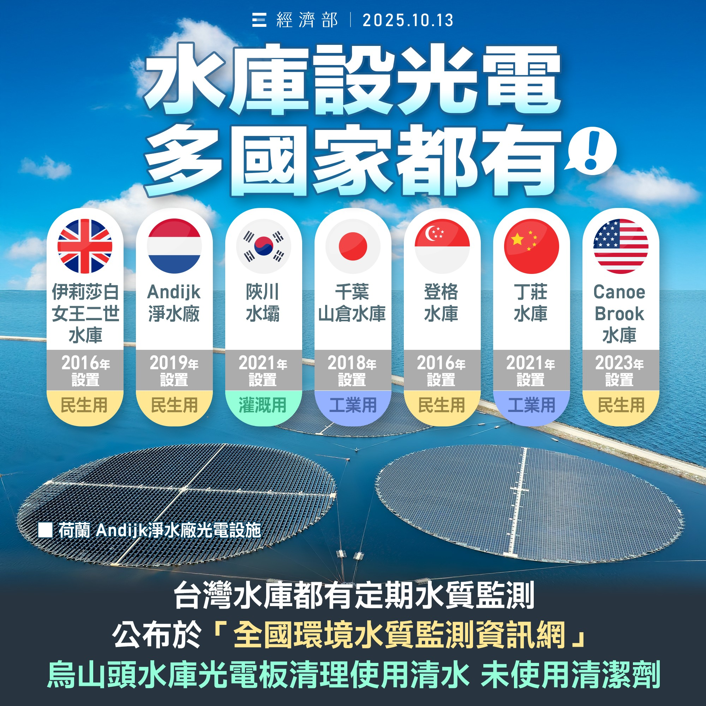

查核對象

經濟部 2025 年 10 月 13 日官方文宣——本頁逐一查核圖卡中的七國案例
經濟部列舉英國、荷蘭、韓國、日本、新加坡、中國與美國的水庫光電，暗示「多國都有，台灣也可以有」。圖卡下方補充台灣水庫「定期水質監測」、烏山頭「未使用清潔劑」，彷彿這就是環境把關。
這些國家在建置前，都經歷了台灣跳過的完整程序——環境影響評估、長年科學測試、社區參與和利益共享。清水洗板和事後水質檢測只是日常營運底線，根本無法取代事前的環境把關。一旦生態出了問題，傷害早已造成。
七國案例：他們怎麼做的？
🇸🇬
新加坡 登格蓄水池
花了十年
環境評估
國家水務局（PUB）2011 年啟動評估，2015-2018 年執行全面環境影響研究——生物多樣性調查、水質監測模型、與自然保育團體協商。
先測試再動工
2016 年先建 1 MWp 測試平台，長期追蹤確認「未觀察到水質變化、無顯著野生動物影響」，才在 2021 年啟用 60 MWp 大型光電場。
持續把關
加裝增氧設備維持溶氧，承諾持續監測。2026 年報導水獺已回歸，研究人員同步擴大野生動物監測。
參考來源
烏山頭水庫對比
新加坡從概念到商轉花了十年，先用小型測試平台驗證三年，再做三年環境影響研究。烏山頭水庫未執行任何事前環評或測試平台，直接發包建置，且水庫用途為灌溉及民生飲用水，風險層級遠高於新加坡的蓄水池。
🇬🇧
英國 伊莉莎白女王二世水庫
規劃六年
環境審查
2013 年向 Elmbridge 議會申請 EIA 篩選意見書（案號 2013/3182），確認是否須完整環評。歷經六年規劃，2016 年啟用。
嚴控覆蓋
光電板僅覆蓋水面不到十分之一（23,000 片），維持光線穿透與水域生態循環。
國會持續監督
2025 年 6 月、2026 年 4 月英國國會均辯論浮動光電規劃許可與生態影響——監管從未停止。
參考來源
烏山頭水庫對比
英國歷經六年規劃，向地方議會申請 EIA 篩選，且嚴控覆蓋面積在水面的十分之一以下。烏山頭水庫免環評，以管理機關「自行招商」規避審查，且國會無任何公開辯論紀錄。
🇳🇱
荷蘭 Andijk 淨水廠
分階段驗證
頂尖研究
水務機構 PWN 與國際水利機構 Deltares、KWR 水研究院合作，事前調查水溫、混合、藻類與水生生態影響。
分階建置
光電板以「島嶼」形式分散設計。PWN 承諾：先確認已建島嶼無負面影響，才啟動下一階段。
誠實面對未知
Deltares 坦言「影響仍大量未知」，持續追蹤。2025 年研究發現淺水飲用水庫可能導致底棲藍綠菌增生。
參考來源
烏山頭水庫對比
荷蘭分階段建置，確認無負面影響才啟動下一階段，且坦承「影響仍大量未知」持續研究中。烏山頭水庫一次到位、全面建置，未分階段驗證。烏山頭同為飲用水源，淺水飲用水庫的藍綠菌風險與此高度相關。
🇰🇷
韓國 陜川水壩
居民共享利益
居民投資權
K-water 將社會溝通視為核心——居民可直接投資，成為利益關係人，以資訊透明化解衝突。
收益共享
結合公部門領導、企業採購與社區收益共享。2024 年簽訂第二期 PPA（366 億韓元），持續深化參與。
治理典範
國際期刊研究 K-water 如何透過居民參與機制解決社會爭議，成為各國參考的治理模型。
參考來源
烏山頭水庫對比
韓國讓居民投資、共享收益，以資訊透明化解衝突，成為國際治理典範。烏山頭水庫未見任何居民投資或收益共享機制，地方居民無法成為利益關係人，溝通管道嚴重不足。
🇯🇵
日本 千葉山倉水庫
工業用水 + 颱風教訓
用途完全不同
山倉水庫是工業用水，「不具有關聯的生態系統或水生族群」——與供應灌溉飲用水的烏山頭完全不同層級。
颱風災害
2019 年法西颱風造成光電板大面積脫落起火，暴露極端氣候下的結構風險。事後以改良結構重建。
擴建須環評
後續擴建（300-500 MW）已標註需進行環評（2026-2028）——日本對大型擴建並未免除把關。
參考來源
烏山頭水庫對比
山倉水庫是工業用水，不涉及飲用水或灌溉安全，即便如此，後續擴建仍須環評。烏山頭水庫是嘉南平原的灌溉與民生飲用水源，風險層級遠高於工業用水庫，卻反而免環評。台灣同為颱風頻繁地區，山倉的颱風災害教訓也值得警惕。
🇨🇳
中國 丁莊水庫
無公開環評
資訊黑箱
工業用水庫，60 萬片面板（800 個足球場）。查無任何公開環評報告，效益數據全來自官方媒體引述營運方說法。
值得深思
在環境治理透明度與公民參與無法比擬民主國家的情況下，經濟部拿中國案例為台灣背書，把關標準往哪裡對齊？
參考來源
烏山頭水庫對比
丁莊水庫同為工業用水，且環評資訊完全不透明。經濟部以一個連環評報告都查不到的中國案例來為台灣背書，是要向中國的環境治理標準看齊嗎？烏山頭水庫供應的是你我喝的水、農田灌溉的水。
🇺🇸
美國 Canoe Brook 水庫
三層審查
多重許可
地方規劃委員會核准 + 州環境保護局許可 + 聯邦陸軍工兵署 Nationwide Permit 52。
逐案審查
NJ 公共事業委員會兩度審議費率因子（2020、2023），明確表示審查結果不構成其他案例先例。
科學佐證
2025 年 USGS 研究 11 座水庫：覆蓋面積越大，水生棲地適宜性變異越大，建議逐案評估。
參考來源
烏山頭水庫對比
美國須通過地方、州、聯邦三層審查，且逐案評估、不構成先例。烏山頭水庫無任何層級的環境許可審查，以「自行招商」一關通過。美國學術研究明確建議逐案評估，台灣卻連第一次評估都省略。
回到烏山頭：他們跳過了什麼？
烏山頭水庫光電案關鍵事實
設置面積
約 11.5 公頃，佔水庫面積 1.12%
水庫用途
灌溉及民生用水——嘉南平原農業命脈
環境評估
免環評——以水庫管理機關「自行招商」名義規避審查
居民參與
未見地方溝通與利益共享機制
後續爭議
枯水期底座外露，發現為中國製造；官方僅以「未用清潔劑」回應
- 新加坡花十年、英國花六年、荷蘭分階段驗證——烏山頭在缺乏長期環境基線數據下倉促發包。
- 「定期水質監測」不等於「事前把關」——這就像體檢不等於預防疾病。事後發現問題時，傷害早已造成。
- 經濟部拿工業用水庫類比灌溉飲用水庫——日本山倉、中國丁莊都是工業水庫，與供應你家用水的烏山頭風險等級完全不同。
國際研究怎麼說？
四項關鍵研究發現
USGS 2025
分析 11 座美國水庫，各水庫反應差異極大且互相矛盾——不能一體適用，必須逐案評估。
94 篇論文回顧
建議核心水域覆蓋率低於 30%。覆蓋比例是決定生態影響的核心變數。
英國模型
水溫效應延伸至水庫長度的 20%，影響範圍遠超光電板本身。
MDPI 2025
淺水飲用水庫可能導致底棲藍綠菌增生，改變整個水域生態結構。
結論只有一個：沒有事前評估，任何覆蓋比例都不能保證安全。
後續發展：光電三法三讀通過
2025 年 11 月 14 日，立法院三讀修正環評法、發展觀光條例、地質法：
- 水面光電容量 1 萬瓩以上或面積 5 公頃以上須環評
- 烏山頭 11.5 公頃已超過門檻
- 國家公園禁設地面、水面光電
修法本身就證明了：「免環評」的漏洞確實存在，社會的把關要求有其正當性。
參考來源